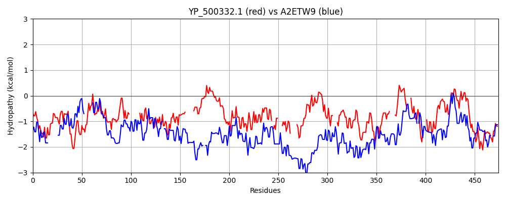

Hit Accession: A2ETW9
Hit TCID: 1.C.105.2.2
Hit Description: gnl|BL_ORD_ID|249 gnl|TC-DB|A2ETW9|1.C.105.2.2 Viral A-type inclusion protein, putative OS=Trichomonas vaginalis GN=TVAG_192230 PE=4 SV=1
Mach Len: 474
e:0.000000
Query TMS Count : 1
Hit TMS Count: 0
TMS-Overlap Score: 0.000000
Predicted Substrates:CHEBI:3473;cation
BLAST Alignment:
Score: 176 , Bit scores: 72 bits, E-value: 3.5e-13, Alignment length: 474, Percentage identity: 20
Query: 104 QSEIDDANELMDSYEQSYQQQLEDVNEIIALYKDNDELYDKCKVDYREMKRDVLANRHQFGEAASLLETEIEKFEPRLEQYEVLKADGNYVQAHNHIAA----------LNEQMKQLRSYMEEIPELIRETQKELPGQFQDLKYGCRDLKVEGYDL--------DHVKVDSTLQSLKTELSFVEPLISRLELEEANDKLANINDKLDDMYDLIEHEVKAKNDVEETKDIITDNLFKAKDMNYTL-QTEIE----YVRENYYIN------ESDAQSVRQFENEIQSLISVYDDILKEMSKSAVRYSE----VQDNLQYLEDHVTVINDKQEKLQNHLIQLREDEAEAEDNLLRVQSKKEEVYRRL-----LASNLTSVPERFI---IMKNEIDHEVRDVN--EQFSERPIHVKQLKDKVSKIVIQMNTFEDEANDVLVNAVYAEKLIQYGNRYRKDYSNVDKSLNEAERLFKNNR 534
+SEIDD N + + +Q EI ++N L K + K+ + + S+LE EI+ LE+ +V K + N + A L +Q+ QL Y E++ +++E Q L ++ +K L+ E + +++K ++ Q K E+S + +L E NDKL + +++ + +E+ + E+ D + KD N L +E+E Y +EN +N +++ Q EN ++ ++ L+ ++ + E V+D L + + +KQ+ N +LR++ +E+ + +QS+ E + +++ +SN++ ++ + ++K ID E DV E + +K+ KD I I+ + ++ ++ + + R +Y+ + +++ F+NN+
Sbjct: 307 KSEIDDKNNEIKNLQQ----------EISNFEEENANLNAKITELEKSAKKSI--------QTISILEKEIDDLSEELEKQQVTKTESNSDDFQKQVEAVRLVKEENDQLRDQINQLTVYKEKMNSILKENQN-LKSEYIKMKDENTLLREENERIMEESNAAKENLKKENENQ--KNEISSLTNEDELYKLREENDKLIKSREAQNEIIQKLNNEMNQMKEKEKDFDKLAQEKKLLKDENDRLINSEMEELDKYKKENQDLNNELQRIKNERQENENKENNLKQGNEQLNEELQRTKQTVINKEEELKKVRDEADKLRKKIEELKEKQQNQINDNEELRKEIKSSEEKMKEIQSENEILKKQIEKEDENSSNISDDLQKLVNKSLVKESID-ENNDVETIENLKKEIEDLKKEKDNFDSISIENEDLRSQVEVLIKVEDERNQMSEELEKLRANYNELQSQISKQN--FENNK 756 | Protein Hydropathy Plots: |
|---|
| |
Pairwise Alignment-Hydropathy Plot:
|
|---|
|  |